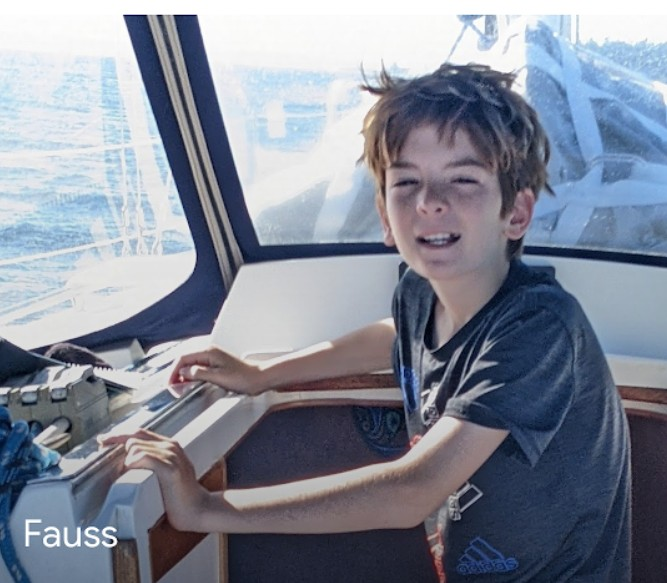

About Me - Introduction

Information about me
Hello! Welcome to my website! This is my final for my Web Design class. My name is Fauss Patton, and I am an eighth grader at Eastside Preparatory School in Kirkland, Washington. I was born in Seattle, Washington, where I have lived my whole life. I went to University Child Development School (or UCDS) and since 5th Grade, I have went to Eastside Preparatory School. I have a twin brother, named Harris, and no other siblings.
My hobbies include skiing, sailing, basketball, and playing videogames. I also enjoy reading, some of my favorite books include 1984 by George Orwell, Dune by Frank Herbert, The Hobbit by J. R. R. Tolkien, and Of Mice and Men by John Stienbeck. I ski alot with my family, my brother, parents, and I are all big skiers. Normally, we ski at crystal mountain, but we also take ski vacations to Idaho and British Columbia. Sailing is much of the same, my family owns a 42-foot sloop and we often take weekend or week-long trips up through Puget Sound, the San-Juan Islands, and Canada. I have played basketball since fifth grade, for my school. I play videogames with my brother on our Xbox.
As an 8th grader, my plans for the future are definetly not set, but I plan to stay at Eastside Prep for high school. For college, I want to go somewhere on the east coast, to experience life there since I have spent most of my life on the west coast being born and raised here. On a trip last summer, my dad and I took a self guided tour of West Point, the army academy, and it had a beautiful campus. My dad has many quite close freinds that were in the military and they all speak very highly of their experiences from those years. And they certinatly do tell great stories. I obviously don't want that to be my only option, and I understand that the army is not for everyone, but if I did go to West Point I don't think I would regret it. Another option high on my list is the University of Texas, I think I would have a fun time in such a radically different enviroment from the one I grew up in.
In this website, I will cover my:
- Sports
- Hobbies
- Classes
- Interests
- Contact Information
- Images
Use the buttons on the top of your screen to navigate this website.
Welcome to the rest of the site!